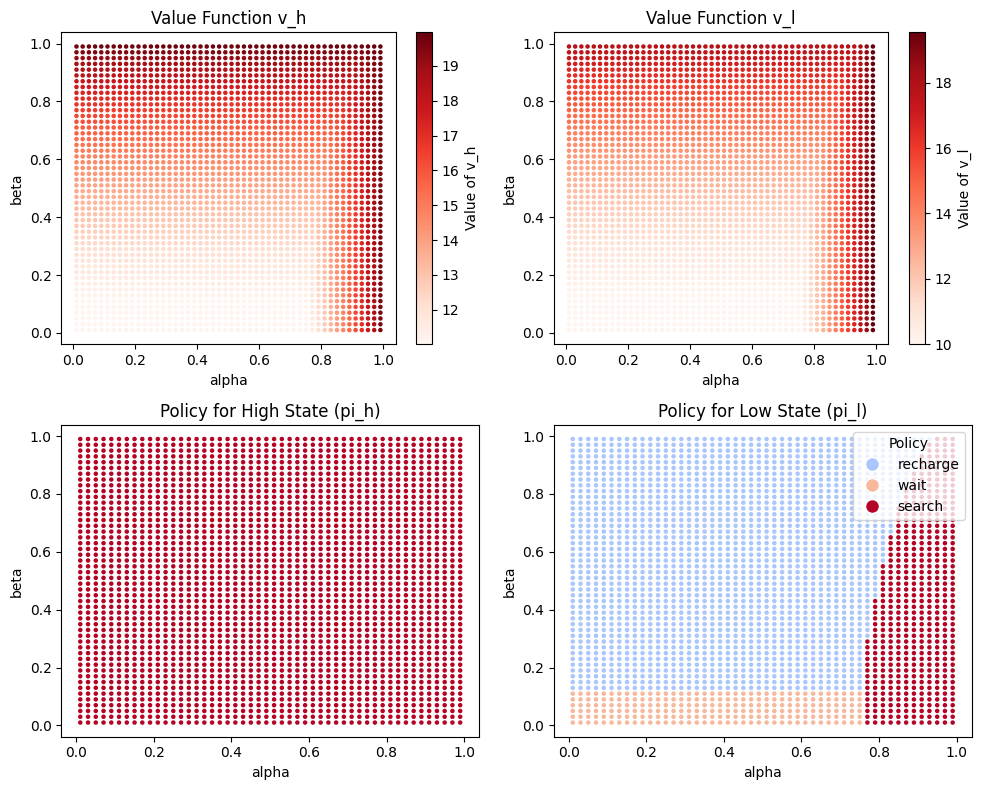

Posted on: February 9th, 2025
This post presents a solution to a Markov Decision Process (MDP) problem using linear programming (LP). We explore a recycling robot problem that optimizes actions to collect soda cans while managing battery levels. The approach is based on Bellman optimality equations and implemented in Python using the cvxpy library.
This document presents a solution to a Markov Decision Process (MDP) problem using linear programming (LP). The problem, as proposed by Sutton and Barto, involves optimizing the actions of a robot that collects soda cans while managing its battery levels efficiently.
The robot operates in two battery states: high and low. Depending on the state, the robot can choose among several actions:
2, but in the high state, it risks transitioning to the low state with probability 1 - α. In the low state, searching risks running out of battery, penalized by -3 (after which the battery is set to high state).1 and keeps the battery state unchanged.
The objective is to maximize the cumulative discounted reward with a discount factor γ = 0.9.
Using the Bellman optimality equations, the problem is formulated as an LP. Let v(h) and v(l) represent the value functions for the high and low battery states, respectively. The rewards are defined as rsearch = 2 and rwait = 1. The constraints are derived as follows:
High state (h):
v(h) ≥ r₍wait₎ + γ · v(h)
v(h) ≥ r₍search₎ + γ · (α · v(h) + (1 - α) · v(l))
Low state (l):
v(l) ≥ r₍wait₎ + γ · v(l)
v(l) ≥ γ · v(h)
v(l) ≥ β · r₍search₎ - 3 · (1 - β) + γ · ((1 - β) · v(h) + β · v(l))
The LP formulation is:
Minimize: v(h)
Subject to: the above constraints.
The following Python code uses the cvxpy library to solve the linear programming formulation of the recycling robot problem:
def recycling_robot(alpha, beta, r_s=2, r_w=1, gamma=0.9):
# Decision variables
v_h = cp.Variable(name="v_h") # Value for high state
v_l = cp.Variable(name="v_l") # Value for low state
# Objective
objective = cp.Minimize(v_h) # we can also use v_h + v_l
# Constraints (Bellman)
constraints = [
# high -> wait
v_h >= r_w + gamma * v_h,
# high -> search
v_h >= r_s + gamma * (alpha * v_h + (1 - alpha) * v_l),
# low -> wait
v_l >= r_w + gamma * v_l,
# low -> recharge
v_l >= gamma * v_h,
# low -> search
v_l >= beta * r_s - 3 * (1 - beta) + gamma * ((1 - beta) * v_h + beta * v_l)
]
# Solve the problem using a linear programming solver
prob = cp.Problem(objective, constraints)
prob.solve(solver=cp.GLPK) # Use GLPK, an LP solver
# Convert v_h and v_l to float
v_h = float(v_h.value)
v_l = float(v_l.value)
# Calculate optimal policies
pi_h = -1
pi_l = -1
eps = 0.001
if abs(v_h - (r_w + gamma * v_h)) < eps:
pi_h = 1 # wait
elif abs(v_h - (r_s + gamma * (alpha * v_h + (1 - alpha) * v_l))) < eps:
pi_h = 2 # search
if abs(v_l - (r_w + gamma * v_l)) < eps:
pi_l = 1 # wait
elif abs(v_l - (gamma * v_h)) < eps:
pi_l = 0 # recharge
elif abs(v_l - (beta * r_s - 3 * (1 - beta) + gamma * ((1 - beta) * v_h + beta * v_l))) < eps:
pi_l = 2 # search
return {
"v_h": v_h,
"v_l": v_l,
"pi_h": pi_h,
"pi_l": pi_l
}
The approach presented successfully solves the recycling robot problem using Python. The results illustrate the optimal value functions and policies for α ∈ (0,1) and β ∈ (0,1), demonstrating how MDPs can be effectively solved using LP.

Figure 1: Results of the linear programming solution.